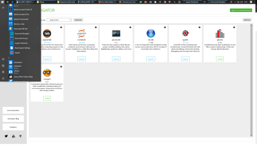
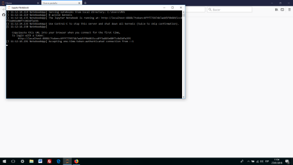
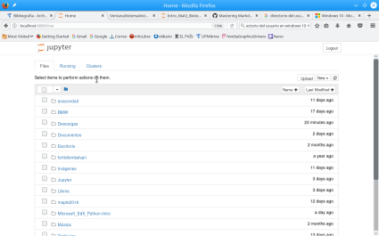
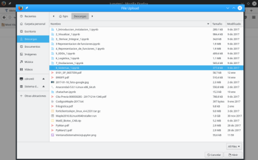
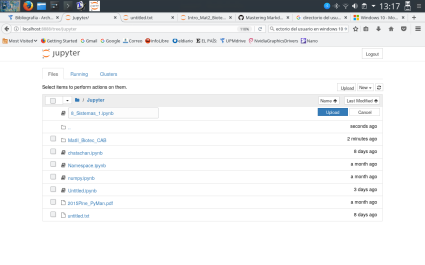
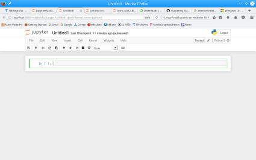

Instalación de Python y Cuadernos Jupyter#
Contenidos#
Introducción#
En estas notas veremos como se instalan las herramientas Python y Jupyter Notebook. Ambas herramientas son necesarias para el seguimiento de la asignatura. Existen dos maneras de instalar estas herramientas:
En este documento explicamos cómo hacerlo de ambas maneras. Nuestra recomendación es que lo hagas usando Anaconda, aunque la decisión final es tuya. También mostramos el manejo básico de la herramienta Jupyter de cara al comienzo del curso.
Importante: es necesario que hayas instalado estas herramientas en tu equipo antes de la primera clase de la asignatura.
¿Qué son estas herramientas?#
Python#
Python es un lenguaje de programación interpretado de código abierto. Puedes encontrar más información en estos enlaces:
Jupyter#
Jupyter es una herramienta para trabajar con Python y los módulos que extienden las capacidades de este lenguaje de programación.
Nosotros vamos a usar los cuadernos de Jupyter, conocidos como Jupyter Notebooks, o classic notebook.
Puedes probar Jupyter en esta web. El classic notebook es el que vamos a utilizar en clase. Al abrirlo puedes acceder a una introducción a esta herramienta, su manejo y funcionalidad.
Anaconda#
Anaconda es una distribución libre de Python. Está constituido por un conjunto de herramientas que permiten gestionar con facilidad la distribucción y actualización del lenguaje de programación Python así como de sus módulos.
La distribución Anaconda contiene herramientas para interaccionar con el sistema Python (y otros lenguajes de programación).
Spyder: un entorno de desarrollo integrado (IDLE del ingés “Integrated Development Environment”) similar a Matlab y RStudio. Una introducción a esta herramienta puede verse aqui.
Jupyter: es la herramienta para interaccionar con el sistema Python que se ha utilizado para generar este documento. Es lo que utilizaremos en este curso.
JupyterLab: evolución de Jupyter
Podéis probar tanto Jupyter como JupyterLab de forma online en este enlace.
Anaconda es propiedad de la empresa Anaconda Inc., pero es código abierto. Forma parte de la estrategia comercial de la empresa: ofrece servicios gratis pero cobra por otros.
Instalación de Python y Jupyter Notebook#
En esta sección veremos cómo instalar Python y Jupyter Notebook de dos maneras:
Instalación usando Anaconda#
En estas notas veremos como se instala el sistema de computación Python a partir de la distribución Anaconda.
Estas notas están escritas pensando en el sistema Windows.
En este enlace puedes descargar Anaconda y aquí encontrarás las instrucciones para su instalación. Existen numerosos vídeos de youtube explicando la instalación de Anaconda, no obstante recomendamos seguir las instrucciones de la web oficial.
En Windows es importante instalar Anaconda para el usuario que se ha utilizado para entrar. No hay que instalarlo para todos los usuarios. El directorio donde se instale no debe contener espacios en blanco
Una vez instalado, tendréis acceso al Navegador de Anaconda, que os permite usar las herramientas empaquetadas por Anaconda así como gestionar la actualización de paquetes del sistema de computación Python. Se encuantra en el menú de inicio de Windows dentro del grupo de programas Anaconda3 (64-bit), si se ha elegido la versión 64-Bit.
Ya estáis listos para utilizar los cuadernos de Jupyter.
{kind=link}
Instalación directa (sin Anaconda) en Windows, Mac y Linux#
En esta sección veremos cómo instalar Python y Jupyter Notebook sin el uso de Anaconda. Este tipo de instalación requiere ser más habilidoso con la computadora. Veremos cómo hacerlo para varios sistemas operativos:
Windows#
En python.org bajar el fichero de intalación para windwos: “python-3.9.1-amd64.exe” (a 13 de febrero de 2021)
Hay instrucciones para la instalación aquí: https://docs.python.org/3/using/windows.html#installation-steps. Importante: al lanzar el instalador (ejecutar el anterior fichero con extensión .exe) se abre una primera ventana de instalación
Seleccionar la caja para añadir Python al PATH (“Add Python3.9 to PATH”) que se encuentar en la parte de abajo de la ventana
Seleccionar “Install Now”
Comprobar la instalación; abrir el terminal, escribir y ejecutar:
python3 --version
Este comando debe devolver información sobre la versión de Python que debe coincidir con la versión utilizada en la instalación.
Para instalar Jupyter: abrir, como Administrador, la ventana “Símbolo del sistema” que se encuentra en el grupo de programas “Sistema Windows” del menú de inicio de Windows y después, escribir y ejecutar
py -m pip install jupyter notebook
PIP (es la herramienta para descargar e instalar paquetes/módulos para Python). Se instala automáticamente al instalar Python. Aquí tiene más información: https://pip.pypa.io/en/stable/. Es importante que al usar PIP se utilize una ventana “Símbolo del sistema” que se haya abierto como Administrador.
Para lanzar Jupyter: abrir la ventana “Simbolo del sistema” y después, escribir y ejecutar
jupyter notebook
Mac#
En Macinntosh, la versión 2.7 de Python está instalada por defecto. Para este curso es necesaria la última versión de Python3. Econtrarás instrucciones para la instalación aquí.
Bajar de aquí el fichero de intalación para Mac de Python 3.9.6 (última versión estable de Python a 27 de agosto 2021)
elige “macOS 64-bit intel installer” si tu Mac tiene una CPU Intel
elige “macOS 64-bit inversal2 installer” si tu Mac tiene una CPU Apple Solicon (los más recientes)
lo más probable es que tu ordenador tenga una CPU Intel; si no sabes que tipo de CPU tiene tu Mac, sigue las instucciones que podrás encontrar aquí.
Ejecutar el fichero que se ha bajado haciendo doble click y seguir las instrucciones de las vebtanas de diálogo que se van abriendo
Comprobar la instalación; abrir el terminal, escribir y ejecutar:
python3 --version
Este comando debe devolver información sobre la versión de Python que debe coincidir con la versión utilizada en la instalación.
Para installar Jupyter: abrir el terminal, escribir y ejecutar
python3 -m pip install jupyter notebook
PIP (es la herramienta para descargar e instalar paquetes/módulos para Python). Se instala automáticamente a instalar Python. Aquí tiene más información: https://pip.pypa.io/en/stable/.
Para lanzar Jupyter: abrir el terminal, escribir y ejecutar
jupyter notebook
Linux#
Estas notas están pensadas para la distribución Ubuntu.
En Linux, Python está instalado por defecto. En ubuntu la versión 2 se lanza con el comando
python, la versión 3, con el comandopython3.También está instalado
PIP. Con esta orden se obtine la última versión instalada en ubuntu
python3 -m pip --version
o
pip --version
o
pip3 --version
Si PIP no está instalado, utilizar:
sudo apt update && sudo apt install python3-pip
Para instalar paquetes:
Jupyter
sudo python3 -m pip install jupyter
Los módulos:
matplotlib, por ejemplo (este es el módulo para visualización de gráficos)
sudo python3 -m pip install matplotlib
Introducción al uso básico de Jupyter#
Jupyter es la penúltima etapa en el desarrollo de un entorno interactivo para el sistema Python. El proyecto que generó el cuaderno IPython (IPython notebook) tuvo su continuación con el cuaderno Jupyter.
En esta sección vamos a ver como se lanza Jupyter así como algunos elementos básicos de su uso.
3.4 Como se puede obtener un PDF o una copia impresa de un cuaderno Jupyter
3.5 Cerrar Jupyter
3.6 Enlaces
Como se lanza Jupyter y como se carga un cuaderno#
Podemos lanzar Jupyter a través del Navegador de Anaconda.
También podemos utilizar el correspondiente icono (Jupyter notebook) del grupo de programas Anaconda3 (64-bit) del menú de inicio de Windows.
Este segundo procedimieto es más rápido.
Cuando lanzamos Jupyter con este segundo método se abre una ventana del sistema como en la imagen (esto puede tardar unos segundos).
{kind=link}
A continuación se abrirá el navegador de internet de tu ordenador: el que haya sido declarado como predeterminado. En una pestaña del navegador veremos un explorador de documentos que nos permite acceder a los documentos de las carpetas que cuelgan de la carpeta del usuario con el que has entrado en tu ordenador. Este es el explorador de documentos de Jupyter.
En un ordenador con Windows10 esta carpeta es:
C:\Usuarios\"Tu nombre de usuario"\. Aquí “Tu nombre de usuario” es el nombre de usuario en Windows10.
En esa misma carpeta verás el directorio
Anaconda3, que es donde está instalado Anaconda.
Deberías ver algo parecido a la siguiente imagen.
{kind=link}
A partir de aquí se puede navegar por las carpetas para buscar un cuaderno Jupyter existente que se encuentre dentro de la carpeta del usuario o en alguna de sus subcarpetas.
Es conveniente crear una carpeta llamada
CNPdentro de vuestro sistema de ficheros a la que podáis acceder con el navegador anterior. Por ejemplo, dentro deDocumentos. Ahí podéis guardar y trabajar con el material del curso que os proporcionamos en Moodle.
Podéis crear un cuaderno de Jupyter nuevo o abrir uno ya existente.
Para crear un nuevo cuaderno se utiliza el botón New del explorador de carpetas de Jupyter. Hay que seleccionar la opción Python 3.
Se abrirá una nueva pestaña con un cuaderno con una sola celda vacia. La pestaña del navegador de internet lleva por título
Untitle1, si es el primero que abres.
Para abrir un cuaderno Jupyter ya existente hay que hacer click sobre el nombre en el explorador de carpetas de Jupyter. Se abrirá una nueva pestaña en el navegador de internet. La nueva pestaña del navegador de intenet de tu ordenador tiene el nombre del cuaderno Jupyter que acabas de abrir.
Los cuadernos Jupyter tienen un libro por icono y la extensión
.ipynb(del inglés “Interactive Python notebook”).
Solamente podrás ver y abrir los cuadernos de Jupyter a los que tengas acceso desde el explorador de documentos de Jupyter. Si quieres abrir un cuaderno en otra localización del sistema, por ejemplo un lápiz USB, hay dos maneras de conseguirlo:
mueve el cuaderno a alguna carpeta visible en el explorador de documentos del sistema
usa el botón
Uploadque se encuentra en la parte superior derecha. Se abrirá una ventana para poder navegar por el sistema de carpetas del ordenador. Después de seleccionar el documento aparece de nuevo el explorador de documentos de Jupyter en el que vemos el documento seleccionado. Para cargarlo en esta carpeta hay que utilizar el botónUploadque aparece a la derecha del nombre del documento.
Búsqueda de documento |
Botón upload |
|---|---|
 |
 |
Uso básico de un cuaderno de Jupyter#
Esta imagen muestra un cuaderno nuevo de Jupyter:
{kind=link}
Como se puede ver consta de tres áreas:
Menús:
File,Edit,View, etc.La lista de iconos o barra de tareas
El área del cuaderno con las celdas
Encima de los menús está el nombre del cuaderno. Para cambiar el nombre, coloca el puntero del ratón en Untitle1 y haz click. Ya puedes poner el nombre que quieras.
No es conveniente poner nombres con espacios en blanco.
Para cerrar el cuaderno ve al menú File y haz clik en la opción Close and Halt.
Para guardar el contenido del cuaderno sin cerrarlo hay que usar el icono del disquete.
Un cuaderno está formado por celdas que pueden ser de varios tipos. Los tipos fundamentales son:
Código (Code)
Texto (Markdown)
Para seleccionar el tipo de celda se debe utilizar el menú desplegable de la lista de iconos.
Celdas de Jupyter#
Las celdas de código (‘Code’, en inglés) sirven para introducir comandos de Python y ejecutarlos. Por defecto, la primera celda de un cuaderno nuevo es una celda de código. En el menú desplegable de la fila de iconos debe indicar “Code”. A la izquierda de la celda aparece In []. Entre los paréntesis habrá un numero cuando se ejecute la celda. Ese número indica el momento en el que se ejecutó la celda de código.
Si el número que aparece es
nquiere decir que fue lan-ésima celda en ejecutarse desde que se abrió el cuaderno.
Al ejecutar una celda de código debajo de ella aparecerá la salida del comando ejecutado (si tiene alguna). A la izquierda de la salida se podrá ver Out[n] con el n correspondiente a la celda de código ejectada.
Las celdas de texto corresponden al término Markdown en el menú de la fila de iconos. No tienen nada a su izquierda.
Para ejecutar una celda se puede utilizar la combinación de teclas mayúsculas + enter o bien se puede utilizar el icono de la fila de iconos que tiene una punta de flecha hacia la derecha.
Como se puede obtener un PDF o una copia impresa de un cuaderno Jupyter#
Una posibilidad es utilizar la opción Print Preview del menú File. Esto abre una nueva pestaña del navegar con una copia del cuaderno. Después se puede utilizar la opciones del navegador para imprimir.
Otra opción es utilizar la opción Download as\(\rightarrow\) PDF via ... del mismo menú File. Es posible que esta opción no funcione en todos los casos ya que a veces es necesario el uso de paquetes que puede que no estén instalados.
Cerrar Jupyter#
En primer lugar debemos guardar el contenido de todos los cuadernos abiertos con el icono del disquete que hay en cada uno de ellos. También se puede guardar el contenido de un cuaderno sin cerrarlo con la opción Save and Checkpoint del menú File.
En segundo lugar hay que cerrar cada cuaderno con la opción Close and Halt del menú File. Esto cierra la pestaña del navegador de intenet del cuaderno.
Después habrá que cerrar la pestaña del explorador de carpetas de Jupyter.
Todavía no se ha cerrado Jupyter. Para cerrarlo debemos volver a la ventana del sistema, la que se abrió al lanzar Jupyter, y sobre ella hacer click y repetir por dos veces la secuencia de teclas Ctrl+ C. Si has utilizado el Navegador de Anaconda, no tendrás que hacer esto último.
Enlaces#
Estos enlaces proporcionan más información sobre Jupyter